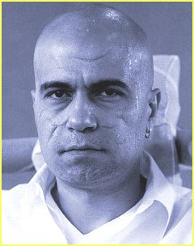

 Слави Трифонов е роден на 18 октомври 1966г. Израства в нормално
работническо семейство, според тогавашните стандарти и има сестра. Още
в основното училище се проявява като много общително и симпатично
дете. По-късно, през юношеските си години, проявава музикални и
артистични наклонности и започва да свири на виола. Завършва средното музикално училище в Плевен и като естествено продължение следва кандидатстване в Консерваторията.
Бива приет и така се обучава там до момента, в който не успява да издържи изпита по камерна музика в последния семестър, и е принуден да
приключи образованието си на крачка от така желаната в онези времена диплома за
висше образование. За него също е известно, че в живота му има период, когато успява да познае мизерията и чара на гурбетчийството живеейки и свирейки в Италия. Слави Трифонов е роден на 18 октомври 1966г. Израства в нормално
работническо семейство, според тогавашните стандарти и има сестра. Още
в основното училище се проявява като много общително и симпатично
дете. По-късно, през юношеските си години, проявава музикални и
артистични наклонности и започва да свири на виола. Завършва средното музикално училище в Плевен и като естествено продължение следва кандидатстване в Консерваторията.
Бива приет и така се обучава там до момента, в който не успява да издържи изпита по камерна музика в последния семестър, и е принуден да
приключи образованието си на крачка от така желаната в онези времена диплома за
висше образование. За него също е известно, че в живота му има период, когато успява да познае мизерията и чара на гурбетчийството живеейки и свирейки в Италия.
Като фактология Слави сигурно има период, когато Слави търси най-различни
начини за проява - като напр. случката, която разказват група Сигнал в гостуването
си в "Шоуто на Слави"; как Слави пожелал по време на едно тяхно клубно изпълнение
в Студентски град преди години да изпее една песен. Песента се оказва
"Камъните падат", но във вариант на английски език. Също така Слави сам е казвал за себе си
(колко наистина, колко на шега), че е успял да стигне до дванадесета виола в
оркестъра на Българското Народно Радио.
Но истинският Слави за нас се появява със студентското предаване "Ку-Ку".
По това време продукцията е първата външна такава в Българската Национална
Телевизия и Трифонов попада там случайно. Бива препоръчан на екипа от
тогавашната си приятелка и първата му медийна изява се състои от смела импровизация в
сценка, в която е със тоалетно казанче на гърба. За периода на съществуването на
предаването в първоначалния му състав, Слави има възможността да покаже и артистичните си
наклонности, а също така и да наложи една нова за преването концепция. Известно
време след напускането на Влади Въргала, излиза първият албум на "Ку-Ку" -
"Ръгай чушки в боба". Слави събира и организира тогавашния бенд и доказва, че
има възможности за развитие на екипа на предаването и в музикално направление.
Своеобразната премиера на албума са първите награди на Ку-Ку академията,
където комбинацията от скечове и музикални изпълнения се оказва взривоопасна и
единствена по рода си в страната за онези години. Ку-Ку имат възможността да обиколят
страната с едно своеобразно турне, наречено на първия им албум и да поставят
основите за бъдещите по-мащабни такива.
Cлави все по-смело настъпва на музикалния фронт - само след година излиза
и вторият албум на Ку-Ку, "Шат на патката главата". В този си вариант на
състав-изпълнители вече липсва Август Попов, но за сметка на това изпод куклата са
излязли и са се присъединили Васил Василев-Зуека и Стефан Рядков. Слави изцяло
поема отговорността за музикалното направление в дейността им и сам довежда
цял симфоничен оркестър и организира вторите годишни награди на Ку-Ку
академията (даже дирижира оркестъра, който свири на тях). В предаването се заражда идеята
за Roma TV и следвашият им едноимен албум е с продуцент и главен
художествен ръководител на оркестъра Слави Трифонов (също така и първа цигулка). Правят
второто си национално турне през лятото на 1996 г.
След известно време предаването "Ку-Ку" бива спряно, но за сметка на това
се появява "Каналето". Там под запазената марка и мениджърството на "КаменВо"
работят около година. После се зараждат и първите недоразумения между него
и Слави Трифонов, и Любен Дилов-син. Създават от три равни дяла ТриВоДи, тримата
са съдружници, а Слави е управител. Камен предостъпва марката Каналето за една
година, а след раздялата им - си я получава обратно за да си прави вече своето Канале. За този творчески период на Слави излизат още два албума - "Жълта книжка" и
"Хъшове"; Каналето успяват да "свалят" от власт Жан Виденов и са в основата на
нежната революция от зимата на 1997. И за двата излезли албума е отбелязано,
че аранжиментите са направени със специалната помощ на Слави. Също така, в едно
паметно предаване от този период, Слави се разделя с неизменната си опашка в знак на
протест срещу тогавашните управляващите. През пролетта на съшата година излизат още два
нови албума - сборния "Каналето - The Best" и самостоятелния албум на Слави - "Едно
Ферари с цвят червен". Лятото на 1997 се оказва съдбоносно за Каналето и тогавашния
му състав - след грандиозното турне "Булгартабак Каналето" и няколко предавания в началото на новия сезон, Каналето се разпада като такова на "Каналето" по БНТ и предаването "Хъшове" без национален ефир и търсещо си подслон в някоя
частна телевизия в страната.
Като главна причина за разпаденото на екипа се смята недоразуменията
между Слави и Камен, но каква е истината знаят само и единствено те. Медиите
отлично поддържаха огъня между тях и за известно време това беше бум номер едно в
страната. Слави остава само със Стефан Рядков от актьорите, но затова пък с Ку-Ку Бенд.
Намери се пред проблеми като липса на национален ефир, недостатък на талантливи
актьорски кадри, неудобно студио... Но въпреки всичко намери начин на оцелее.
"Хъшове" се превърна в стабилна продукция, излъчвана в цялата страна и пряко в световната мрежа Интернет. Слави успя да се пребори с фалшивия актьорски
ентусиазъм на няколко млади актьори, но пък в същото време предаването създаде звезди като
Руслан Мъйнов, Любомир Нейков и Албена Михова. Централно място започна за заема Ку-Ку
бенда и по-точно Евгени Димитров-Маестрото и Георги Милчев-Годжи, тогавашния водещ
на "Часа на Бенда". Успяват да издадат още три албума - "Албум Девети-Трагичен",
"Вавилон" и "Няма "не искам". Издател и на трите е БМК или Българска Музикална Компания,
новото бизнес начинание на Слави, Маестрото и Годжи (60%, 10%, 10% и 20% за управителя
на компанията Петко Гавазов). Но и тогава едно нещо не даваше мира на Слави -
липсата на национален ефир. Множеството му опити да се пребори с БНТ, НСРТ и куп държавни
инстанции бяха придружавани от различни акции организирани от екипа на предаването и
горещо подкрепяни от широката аудитория. Всички знаеха, че Слави и екипът му заслужават
това, за което се бореха. Само дето властите не им се искаше да е точно така и правеха
всичко по силите си за да го възпрепядстват.
Но както се казва - всяко зло за добро. С появата на новия Ефир 2 за
българите - Национална Телевизия БиТиВи, паднаха и всички забрани и препядствия
за Слави. В ефир се появява "Шоуто на Слави Трифонов", което се излъчва пет дни в
седмицата от 22:30 часа. Момента с появата на новата телевизия е благодатен, с изключение на
това, че все пак отказват на Слави някои неща, като напр. времето от 22:00 часа. Той
поема отговорността за целия екип, а bTV предоставят техническото оборудване, студиото,
декора. Телевизията осигурява рекламите, Слави получава определни средства, с които
разполага както той прецени. Да, условията са тежки, но както и самия Слави казва: "По-добре
всяка вечер по bTV, отколкото веднъж седмично по Седем дни". Рейтингът на шоуто
е най-показателното доказателство за успеха му. Въпреки че е трудно да се определи
с точност какъв е, по груби изчисления
и някои маркетингови проучвания, това е
най-високия рейтинг за телевизионно предаване в страната. Оставяме фактите да говорят сами за
себе си. Осемте месеца съществуване на шоуто и над 140-те излъчени предавания са
перфектното доказателство, че си заслужава да ги има и Дългия и предаването му. Или просто
казано ... show must go on ...
Тази биография на Слави Трифонов е базирана на материали от нашия печат:
списание "I Love Каналето" 1997г. и списание "МИТ" януари 2001г.
© 2001
СлавиWeb. Всички права запазени. |